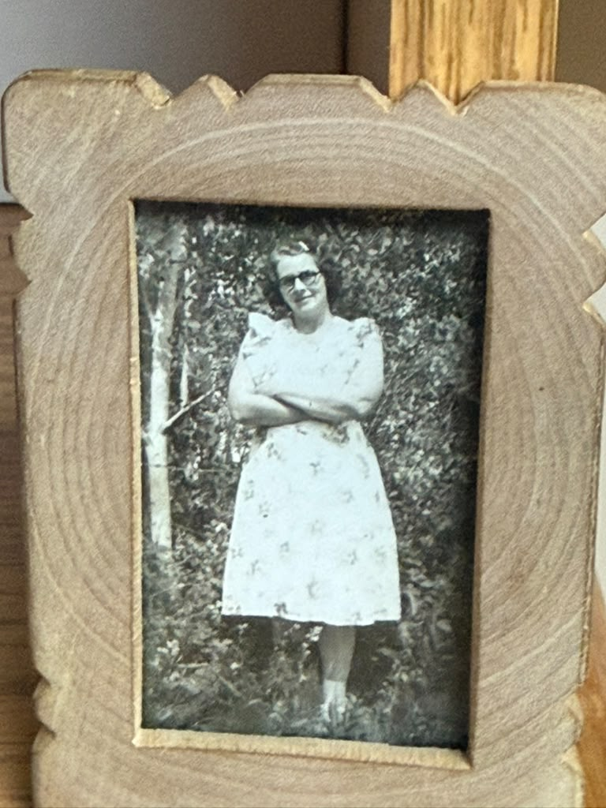
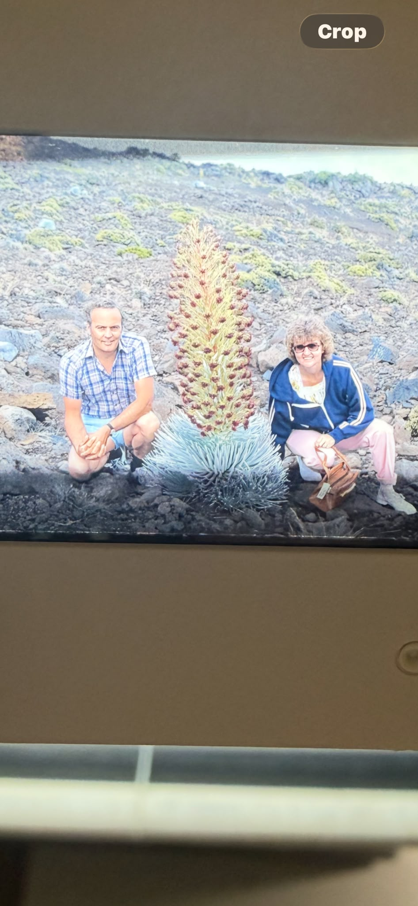
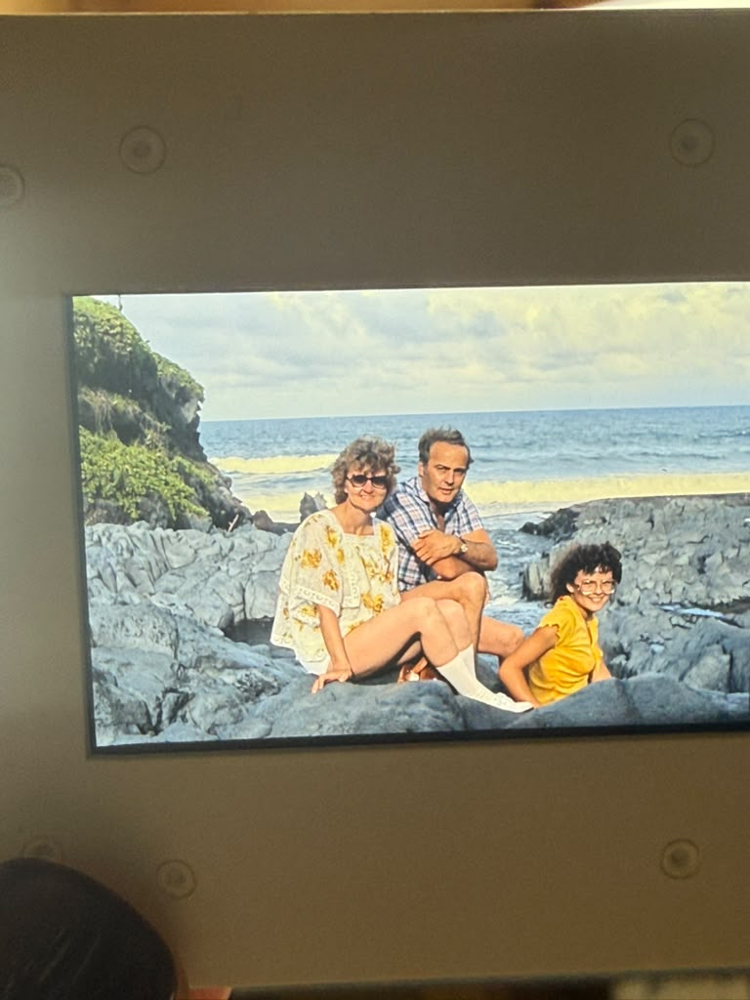

Richer Family Library
Pictures

Framed portrait
Date unknown
View full size (opens in a new tab)
Beside a flowering plant
Date unknown
View full size (opens in a new tab)
At the shore
Date unknown
View full size (opens in a new tab)